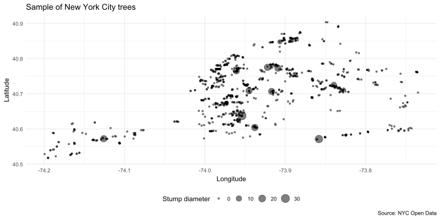
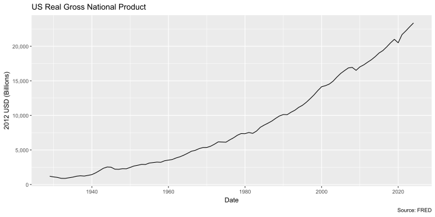
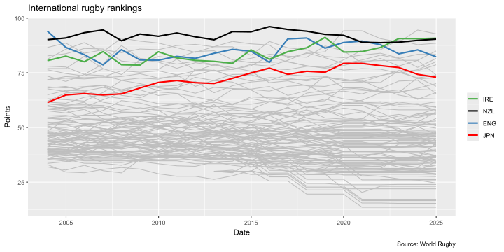

# Load necessary packages
if (!require("pacman")) install.packages("pacman")
pacman::p_load(tidyverse, rvest, janitor, httr2,
jsonlite, hrbrthemes, timeperiodsR,
listviewer, RSelenium, netstat)Webscraping
STAT150 | R for Data Science
Ihor Miroshnychenko
Kyiv School of Economics
Software requirements
External software
Today we’ll be using SelectorGadget, which is a Chrome extension that makes it easy to discover CSS selectors. (Install the extension directly here.) Please note that SelectorGadget is only available for Chrome. If you prefer using Firefox, then you can try ScrapeMate.
R packages
Webscraping basics
There are actually two ways that web content gets rendered in a browser:
- Server-side
- Client side
1. Server-side
- The scripts that “build” the website are not run on our computer, but rather on a host server that sends down all of the HTML code.
- E.g. Wikipedia tables are already populated with all of the information — numbers, dates, etc. — that we see in our browser.
- In other words, the information that we see in our browser has already been processed by the host server.
- You can think of this information being embeded directly in the webpage’s HTML.
- Webscraping challenges: Finding the correct CSS (or Xpath) “selectors”. Iterating through dynamic webpages (e.g. “Next page” and “Show More” tabs).
- Key concepts: CSS, Xpath, HTML
2. Client-side
- The website contains an empty template of HTML and CSS.
- E.g. It might contain a “skeleton” table without any values.
- However, when we actually visit the page URL, our browser sends a request to the host server.
- If everything is okay (e.g. our request is valid), then the server sends a response script, which our browser executes and uses to populate the HTML template with the specific information that we want.
- Webscraping challenges: Finding the “API endpoints” can be tricky, since these are sometimes hidden from view.
- Key concepts: APIs, API endpoints
Webscraping: A Mix of Art and Science
- Requires adaptability: methods vary across websites and can change over time.
- If you see it in your browser, you can scrape it!
Caveat: Ethical Considerations
Just because you can scrape data doesn’t mean you should. While scraping public data is legal (per hiQ Labs vs LinkedIn), it’s essential to act responsibly:
- Avoid overwhelming servers with excessive requests.
- Be mindful of safeguards against suspected malicious activity.
Mantra: Be nice to the web.
Webscraping with rvest
rvest (link): A tidyverse-inspired R package for server-side webscraping, similar to Python’s Beautiful Soup.
Key Requirement:
Understand CSS selectors to effectively extract data from webpages.
CSS & SelectorGadget: Student Presentation
CSS (Cascading Style Sheets): Defines how HTML elements are styled and displayed.
Key Concepts:
- Properties: The “how” (e.g., font, color, layout).
- Selectors: The “what” (e.g.,
.h1for headers,.h2for sub-headers).
SelectorGadget: A tool to identify CSS selectors for isolating desired webpage content.
➡️ Recommended: Review the SelectorGadget vignette before proceeding.
HTML basics
Basics
- HTML (HyperText Markup Language) is the standard language for creating web pages.
- It uses “tags” to structure content, such as headings, paragraphs, images, and links.
- Attributes provide additional information about elements, like
id,class,src, andhref.
Elements
100+ HTML elements exist, each serving a specific purpose.
- Common elements include:
- Headings:
<h1>,<h2>, etc. - Paragraphs:
<p> - Links:
<a> - Images:
<img> - Lists:
<ul>,<ol>,<li>
- Headings:
Attributes
Attributes provide additional information about HTML elements.
- Common attributes include:
id: Unique identifier for an element.class: Classifies elements for styling or scripting.src: Specifies the source of an image or script.href: Specifies the destination of a link.
Reading HTML in R
- Let’s use
rvestto extract data from a simple HTML snippet.
html_minimal <- minimal_html("
<h1>This is a heading</h1>
<p id='first'>This is a paragraph</p>
<p class='important'>This is an important paragraph</p>
")
html_minimal{html_document}
<html>
[1] <head>\n<meta http-equiv="Content-Type" content="text/html; charset=UTF-8 ...
[2] <body>\n<h1>This is a heading</h1>\n <p id="first">This is a paragraph</ ...Finding elements
- Use
html_elements()to find elements using CSS selectors. pselects all<p>elements.#firstselects the element withid="first"..importantselects elements withclass="important".
{xml_nodeset (2)}
[1] <p id="first">This is a paragraph</p>
[2] <p class="important">This is an important paragraph</p>{xml_nodeset (1)}
[1] <p class="important">This is an important paragraph</p>{xml_nodeset (1)}
[1] <p id="first">This is a paragraph</p>Nesting selections
html <- minimal_html("
<ul>
<li><b>C-3PO</b> is a <i>droid</i> that weighs <span class='weight'>167 kg</span></li>
<li><b>R4-P17</b> is a <i>droid</i></li>
<li><b>R2-D2</b> is a <i>droid</i> that weighs <span class='weight'>96 kg</span></li>
<li><b>Yoda</b> weighs <span class='weight'>66 kg</span></li>
</ul>
")
characters <- html |> html_elements("li")
characters{xml_nodeset (4)}
[1] <li>\n<b>C-3PO</b> is a <i>droid</i> that weighs <span class="weight">167 ...
[2] <li>\n<b>R4-P17</b> is a <i>droid</i>\n</li>
[3] <li>\n<b>R2-D2</b> is a <i>droid</i> that weighs <span class="weight">96 ...
[4] <li>\n<b>Yoda</b> weighs <span class="weight">66 kg</span>\n</li>{xml_nodeset (4)}
[1] <b>C-3PO</b>
[2] <b>R4-P17</b>
[3] <b>R2-D2</b>
[4] <b>Yoda</b>{xml_nodeset (4)}
[1] <span class="weight">167 kg</span>
[2] NA
[3] <span class="weight">96 kg</span>
[4] <span class="weight">66 kg</span>{xml_nodeset (3)}
[1] <span class="weight">167 kg</span>
[2] <span class="weight">96 kg</span>
[3] <span class="weight">66 kg</span>Extracting text
Extracting tables
html <- minimal_html("
<table class='mytable'>
<tr><th>x</th> <th>y</th></tr>
<tr><td>1.5</td> <td>2.7</td></tr>
<tr><td>4.9</td> <td>1.3</td></tr>
<tr><td>7.2</td> <td>8.1</td></tr>
</table>
")
html |>
html_element(".mytable") |>
html_table()# A tibble: 3 × 2
x y
<dbl> <dbl>
1 1.5 2.7
2 4.9 1.3
3 7.2 8.1Application 1: Wikipedia
Application 1: Scraping Wikipedia
Task: Scrape the Wikipedia page on the Men’s 100 metres world record progression.
Steps:
- Explore the Page:
- Identify the structure and objects (e.g., tables).
- Note the number of tables, column similarities, row/column spans, etc.
- Load the Page into R:
- Use
rvest::read_html()to read the entire page for further analysis.
- Use
Application 1: Scraping Wikipedia
url <- "http://en.wikipedia.org/wiki/Men%27s_100_metres_world_record_progression"
m100 <- read_html(url)
m100{html_document}
<html class="client-nojs vector-feature-language-in-header-enabled vector-feature-language-in-main-page-header-disabled vector-feature-page-tools-pinned-disabled vector-feature-toc-pinned-clientpref-1 vector-feature-main-menu-pinned-disabled vector-feature-limited-width-clientpref-1 vector-feature-limited-width-content-enabled vector-feature-custom-font-size-clientpref-1 vector-feature-appearance-pinned-clientpref-1 vector-feature-night-mode-enabled skin-theme-clientpref-day vector-sticky-header-enabled vector-toc-available" lang="en" dir="ltr">
[1] <head>\n<meta http-equiv="Content-Type" content="text/html; charset=UTF-8 ...
[2] <body class="skin--responsive skin-vector skin-vector-search-vue mediawik ...The page is read as an XML document, which includes everything required to render the Wikipedia page—similar to viewing a full LaTeX document when you only need specific tables.
Key Insight:
XML structures provide access to all elements of a webpage, but our goal is to extract only the relevant data (e.g., specific tables).
➡️ Next step: Isolate the tables using CSS selectors or dedicated functions.
Table 1: Pre-IAAF (1881–1912)
Step 1: Identify the Table’s CSS Selector
Use SelectorGadget to pinpoint the unique CSS selector for the desired table. This tool helps isolate the table’s content by visually highlighting the relevant elements on the webpage.
Step 2: Extract the Table in R
Once the CSS selector is identified, use rvest functions to extract the data.

Table 1: Pre-IAAF (1881–1912)
pre_iaaf <-
m100 %>%
html_element("#mw-content-text > div.mw-content-ltr.mw-parser-output > table:nth-child(11)") %>%
html_table() %>%
clean_names() %>%
mutate(date = mdy(date))
pre_iaaf# A tibble: 21 × 5
time athlete nationality location_of_races date
<dbl> <chr> <chr> <chr> <date>
1 10.8 Luther Cary United States Paris, France 1891-07-04
2 10.8 Cecil Lee United Kingdom Brussels, Belgium 1892-09-25
3 10.8 Étienne De Ré Belgium Brussels, Belgium 1893-08-04
4 10.8 L. Atcherley United Kingdom Frankfurt/Main, Germany 1895-04-13
5 10.8 Harry Beaton United Kingdom Rotterdam, Netherlands 1895-08-28
6 10.8 Harald Anderson-Arbin Sweden Helsingborg, Sweden 1896-08-09
7 10.8 Isaac Westergren Sweden Gävle, Sweden 1898-09-11
8 10.8 Isaac Westergren Sweden Gävle, Sweden 1899-09-10
9 10.8 Frank Jarvis United States Paris, France 1900-07-14
10 10.8 Walter Tewksbury United States Paris, France 1900-07-14
# ℹ 11 more rowsAlternative: Using Browser Inspection Tools
If SelectorGadget isn’t available or feels cumbersome, try using your browser’s “Inspect Element” feature for precise CSS selector identification.
Example (Google Chrome):
- Open Inspect Console:
- Shortcut: Ctrl+Shift+I (Windows) or Cmd+Option+I (Mac).
- Or right-click on the webpage and select “Inspect”.
- Locate the Element:
- Hover over elements in the console to highlight them on the page.
- Copy the CSS Selector:
- Right-click the highlighted element.
- Select Copy -> Copy selector.
This method provides a quick and precise way to extract CSS selectors without additional tools.
Alternative: Using Browser Inspection Tools

Challenge
Steps:
- Extract the Next Two Tables: Use SelectorGadget or browser inspection to identify their CSS selectors.
- Combine Tables: Bind the extracted tables with the first table into a single data frame.
- Visualize Record Progression: Use
ggplot2to plot the progression over time.
Application 2: Цитрус
Extract the text
{html_document}
<html lang="uk">
[1] <head>\n<meta http-equiv="Content-Type" content="text/html; charset=UTF-8 ...
[2] <body>\n<div id="__next"><div class="__variable_50b907 __variable_372368" ...Identifying CSS Selectors for Relevant Information
After iterative clicking with SelectorGadget, the relevant CSS selectors for the desired elements on this page are:
.MainProductCard-module__title___3fVuF: Title.MainProductCard-module__price___34KIa: Price
Extract the text
Extract the text
Instead, we’ll parse it as simple text via html_text(). This will yield a vector of strings, which I’ll re-assign the same iPhone object.
[1] "Apple iPhone 16 Pro Max 256GB Desert Titanium (MYWX3)"
[2] "62 799₴"
[3] "Apple iPhone 16 Pro 128GB Desert Titanium (MYNF3)"
[4] "51 499₴"
[5] "Apple iPhone 13 128GB Starlight (MLPG3)"
[6] "22 999₴"
[7] "Apple iPhone 16 Plus 128GB Ultramarine (MXVX3S)"
[8] "44 899₴"
[9] "Apple iPhone 15 128GB Black (MTP03)"
[10] "33 999₴"
[11] "Apple iPhone 16 128GB Black (MYE73)"
[12] "39 999₴"
[13] "Apple iPhone 16e 128GB Black (MD1Q4SX/A)"
[14] "34 999₴"
[15] "Apple iPhone 15 256GB Black (MTP63)"
[16] "39 199₴"
[17] "Apple iPhone 16 Pro Max 256GB Black Titanium (MYWV3S)"
[18] "62 799₴"
[19] "Apple iPhone 13 128GB Midnight (MLPF3)"
[20] "22 999₴" Coercing to a data frame
# A tibble: 6 × 2
V1 V2
<chr> <chr>
1 Apple iPhone 16 Pro Max 256GB Desert Titanium (MYWX3) 62 799₴
2 Apple iPhone 16 Pro 128GB Desert Titanium (MYNF3) 51 499₴
3 Apple iPhone 13 128GB Starlight (MLPG3) 22 999₴
4 Apple iPhone 16 Plus 128GB Ultramarine (MXVX3S) 44 899₴
5 Apple iPhone 15 128GB Black (MTP03) 33 999₴
6 Apple iPhone 16 128GB Black (MYE73) 39 999₴Automating the process
Let’s automate the process of extracting data from multiple pages.
Custom function
iphn_scrape <-
function(x) {
cat("Scraping page", x, "\n")
url = paste0(
'https://www.ctrs.com.ua/smartfony/brand-apple/',
x
)
ctrs_iphn <-
read_html(url) %>%
html_elements(".MainProductCard-module__title___3fVuF , .MainProductCard-module__price___34KIa") %>%
html_text() %>%
matrix(nrow = 2) %>%
t() %>%
as_tibble()
Sys.sleep(1) # будемо чемними :)
return(ctrs_iphn)
}
ctrs_iphn <-
lapply(pages, iphn_scrape) %>%
bind_rows()Scraping page page=1;
Scraping page page=2;
Scraping page page=3; # A tibble: 141 × 2
title price
<chr> <chr>
1 Apple iPhone 16 Pro Max 256GB Desert Titanium (MYWX3) 62 799₴
2 Apple iPhone 16 Pro 128GB Desert Titanium (MYNF3) 51 499₴
3 Apple iPhone 13 128GB Starlight (MLPG3) 22 999₴
4 Apple iPhone 16 Plus 128GB Ultramarine (MXVX3S) 44 899₴
5 Apple iPhone 15 128GB Black (MTP03) 33 999₴
6 Apple iPhone 16 128GB Black (MYE73) 39 999₴
7 Apple iPhone 16e 128GB Black (MD1Q4SX/A) 34 999₴
8 Apple iPhone 15 256GB Black (MTP63) 39 199₴
9 Apple iPhone 16 Pro Max 256GB Black Titanium (MYWV3S) 62 799₴
10 Apple iPhone 13 128GB Midnight (MLPF3) 22 999₴
# ℹ 131 more rowsClient-side and APIs
Student Presentation: APIs
APIs (Application Programming Interfaces) are sets of rules that enable different software applications to interact and share data. Here are key concepts:
- Server: A computer running an API.
- Client: A program that exchanges data with the server via the API.
- Protocol: The communication rules (e.g., HTTP).
- Methods: Actions like GET (retrieve), POST, PUT, DELETE used by the client to interact with the server.
- Requests: What the client asks the server to do.
- Response: The server’s reply, which includes a status code, header (meta-info), and body (the actual content).
For more details, check out An Introduction to APIs by Zapier.
API Endpoints
API endpoints are URLs that provide direct access to data from a server’s API database. While they resemble normal website URLs, they return data in formats like JSON or XML instead of rich HTML content.
- API Endpoints: URLs that specify where to access data from an API.
- Data Formats: When you visit an API endpoint, you’ll see structured data in formats like JSON or XML.
- What to Know: While the data might seem unformatted, it’s structured and can be easily read into programming languages like R, Python, or Julia.
Application 1: Trees of New York City
NYC Trees: Introduction
NYC Open Data provides a wealth of public data from various city agencies. You can access datasets on topics ranging from arrests to city job postings and street trees.
For this example, we’ll download data from the 2015 NYC Street Tree Census:
- Visit the Web Page: Open the NYC Open Data page in your browser.
- Find the API Tab: Locate and click the API tab.
- Copy the API Endpoint: Copy the URL provided in the popup.
- Optional: Paste the endpoint into your browser to view the data in JSON format. (Use the JSONView extension for better readability.)
NYC Trees: Extracting Data
nyc_trees <-
fromJSON("https://data.cityofnewyork.us/resource/uvpi-gqnh.json") %>%
as_tibble()
nyc_trees# A tibble: 1,000 × 45
tree_id block_id created_at tree_dbh stump_diam curb_loc status health
<chr> <chr> <chr> <chr> <chr> <chr> <chr> <chr>
1 180683 348711 2015-08-27T00:00… 3 0 OnCurb Alive Fair
2 200540 315986 2015-09-03T00:00… 21 0 OnCurb Alive Fair
3 204026 218365 2015-09-05T00:00… 3 0 OnCurb Alive Good
4 204337 217969 2015-09-05T00:00… 10 0 OnCurb Alive Good
5 189565 223043 2015-08-30T00:00… 21 0 OnCurb Alive Good
6 190422 106099 2015-08-30T00:00… 11 0 OnCurb Alive Good
7 190426 106099 2015-08-30T00:00… 11 0 OnCurb Alive Good
8 208649 103940 2015-09-07T00:00… 9 0 OnCurb Alive Good
9 209610 407443 2015-09-08T00:00… 6 0 OnCurb Alive Good
10 192755 207508 2015-08-31T00:00… 21 0 OffsetF… Alive Fair
# ℹ 990 more rows
# ℹ 37 more variables: spc_latin <chr>, spc_common <chr>, steward <chr>,
# guards <chr>, sidewalk <chr>, user_type <chr>, problems <chr>,
# root_stone <chr>, root_grate <chr>, root_other <chr>, trunk_wire <chr>,
# trnk_light <chr>, trnk_other <chr>, brch_light <chr>, brch_shoe <chr>,
# brch_other <chr>, address <chr>, zipcode <chr>, zip_city <chr>,
# cb_num <chr>, borocode <chr>, boroname <chr>, cncldist <chr>, …API Data Limits
The full NYC Street Tree Census contains nearly 700,000 trees, but the API defaults to returning only 1,000 rows. For our example, we’ve downloaded a small sample.
If you want to access more data, you can override the limit by adding ?$limit=LIMIT to the API endpoint. For example:
To read the first 5 rows: ...?$limit=5 Check the API documentation for more options and details on how to fetch larger datasets.
NYC Trees: Visualization
nyc_trees %>%
select(longitude, latitude, stump_diam, spc_common, spc_latin, tree_id) %>%
mutate_at(vars(longitude:stump_diam), as.numeric) %>%
ggplot(aes(x=longitude, y=latitude, size=stump_diam)) +
geom_point(alpha=0.5) +
theme_minimal() +
theme(legend.position = "bottom") +
scale_size_continuous(name = "Stump diameter") +
labs(
x = "Longitude", y = "Latitude",
title = "Sample of New York City trees",
caption = "Source: NYC Open Data"
)NYC Trees: Visualization

Application 2: FRED data
Get the API key
- Register at the FRED website.
- Go to API keys and generate a new key1.
- Copy the key to your clipboard.
FRED data: Real GNP
FRED data: API Endpoint
As with all APIs, a good place to start is the FRED API developer docs.
If you read through these, you’d see that the endpoint path we’re interested in is series/observations:
- file_type: “json” (Not required, but our preferred type of output.)
- series_id: “GNPCA” (Required. The data series that we want.)
- api_key: “YOUR_API_KEY” (Required. Go and fetch/copy your key now.)
Head over to https://api.stlouisfed.org/fred/series/observations?series_id=GNPCA&api_key=YOUR_API_KEY&file_type=json, replacing “YOUR_API_KEY” with your actual key.
FRED data: Extracting Data
library(httr2)
req <- request("https://api.stlouisfed.org/fred/")
resp <- req %>%
req_url_path_append("series", "observations") %>%
req_url_query(
series_id = "GNPCA",
api_key = Sys.getenv("FRED_API_KEY"), # usethis::edit_r_environ()
file_type = "json"
) %>%
req_perform()
fred <- resp %>%
resp_body_json()
jsonedit(fred, mode = "view")FRED data: Extracting Data
FRED data: Extracting Data
# A tibble: 96 × 4
realtime_start realtime_end date value
<chr> <chr> <chr> <chr>
1 2025-09-26 2025-09-26 1929-01-01 1202.659
2 2025-09-26 2025-09-26 1930-01-01 1100.67
3 2025-09-26 2025-09-26 1931-01-01 1029.038
4 2025-09-26 2025-09-26 1932-01-01 895.802
5 2025-09-26 2025-09-26 1933-01-01 883.847
6 2025-09-26 2025-09-26 1934-01-01 978.188
7 2025-09-26 2025-09-26 1935-01-01 1065.716
8 2025-09-26 2025-09-26 1936-01-01 1201.443
9 2025-09-26 2025-09-26 1937-01-01 1264.393
10 2025-09-26 2025-09-26 1938-01-01 1222.966
# ℹ 86 more rowsFRED data: Visualization
FRED data: Visualization

Application 3: World rugby rankings
Locating the hidden API endpoint
- Start by inspecting the page. (Ctr+Shift+I in Chrome. Ctrl+Shift+Q in Firefox.)
- Head to the Network tab at the top of the inspect element panel.
- Click on the XHR button.
- Refresh the page (Ctrl+R). This will allow us to see all the web traffic coming to and from the page in our inspect panel.
- Our task now is to scroll these different traffic links and see which one contains the information that we’re after.
- The top traffic link item references a URL called https://api.wr-rims-prod.pulselive.com/rugby/v3/rankings/mru?language=en.
- Click on this item and open up the Preview tab.
- In this case, we can see what looks to be the first row of the rankings table (“South Africa”, etc.)
World rugby rankings: Extracting data
endpoint <- "https://api.wr-rims-prod.pulselive.com/rugby/v3/rankings/mru?language=en"
rugby <- fromJSON(endpoint)
str(rugby)List of 3
$ label : chr "Mens Rugby Union"
$ entries :'data.frame': 113 obs. of 5 variables:
..$ team :'data.frame': 113 obs. of 7 variables:
.. ..$ id : chr [1:113] "39" "36" "37" "42" ...
.. ..$ altId : chr [1:113] "a49729a5-a9e7-4a53-b18b-13b81d4752f4" "f683c048-abc7-4713-9286-4dd1921a3285" "ec6ede05-0367-4b75-a66d-2d7a58950dcd" "6f456794-9a4a-4623-abba-c7f93fbaf7d7" ...
.. ..$ name : chr [1:113] "South Africa" "Ireland" "New Zealand" "France" ...
.. ..$ abbreviation: chr [1:113] "RSA" "IRE" "NZL" "FRA" ...
.. ..$ countryCode : chr [1:113] "ZAF" "IRL" "NZL" "FRA" ...
.. ..$ annotations : logi [1:113] NA NA NA NA NA NA ...
.. ..$ metadata :'data.frame': 113 obs. of 0 variables
..$ pts : num [1:113] 91.6 89.8 89.1 87.8 87.6 ...
..$ pos : int [1:113] 1 2 3 4 5 6 7 8 9 10 ...
..$ previousPts: num [1:113] 91.6 89.8 89.1 87.8 87.6 ...
..$ previousPos: int [1:113] 1 2 3 4 5 6 7 8 9 10 ...
$ effective:List of 3
..$ millis : num 1.76e+12
..$ gmtOffset: num 0
..$ label : chr "2025-09-22"World rugby rankings: Extracting data
rankings <-
bind_cols(
rugby$entries$team,
rugby$entries %>% select(pts:previousPos)
) %>%
clean_names() %>%
select(-c(id, alt_id, annotations)) %>% ## Ці колонки не додають особливого інтересу
select(pos, pts, everything()) %>% ## Змініть порядок решти стовпців
as_tibble()
rankings# A tibble: 113 × 8
pos pts name abbreviation country_code metadata previous_pts
<int> <dbl> <chr> <chr> <chr> <df[,0]> <dbl>
1 1 91.6 South Africa RSA ZAF 91.6
2 2 89.8 Ireland IRE IRL 89.8
3 3 89.1 New Zealand NZL NZL 89.1
4 4 87.8 France FRA FRA 87.8
5 5 87.6 England ENG ENG 87.6
6 6 84.4 Argentina ARG ARG 84.4
7 7 83.8 Australia AUS AUS 83.8
8 8 81.6 Scotland SCO SCO 81.6
9 9 81.2 Fiji FIJ FJI 80.9
10 10 77.8 Italy ITA ITA 77.8
# ℹ 103 more rows
# ℹ 1 more variable: previous_pos <int>BONUS: Get and plot the rankings history
start_date <- ymd("2004-01-01")
end_date <- floor_date(today(), unit="years")
dates <- seq(start_date, end_date, by="years")
## Отримайте найближчий понеділок до 1 січня, щоб збігтися з датами випуску рейтингу.
dates <- floor_date(dates, "week", week_start = getOption("lubridate.week.start", 1))
dates [1] "2003-12-29" "2004-12-27" "2005-12-26" "2007-01-01" "2007-12-31"
[6] "2008-12-29" "2009-12-28" "2010-12-27" "2011-12-26" "2012-12-31"
[11] "2013-12-30" "2014-12-29" "2015-12-28" "2016-12-26" "2018-01-01"
[16] "2018-12-31" "2019-12-30" "2020-12-28" "2021-12-27" "2022-12-26"
[21] "2024-01-01" "2024-12-30"BONUS: Custom function
rugby_scrape <-
function(x) {
# cat("Scraping date", x, "\n") # Uncomment this line to see the progress
endpoint = paste0("https://api.wr-rims-prod.pulselive.com/rugby/v3/rankings/mru?language=en&date=", x)
rugby = fromJSON(endpoint)
rankings =
bind_cols(
rugby$entries$team,
rugby$entries %>% select(pts:previousPos)
) %>%
clean_names() %>%
mutate(date = x) %>%
select(-c(id, alt_id, annotations)) %>%
select(date, pos, pts, everything()) %>%
as_tibble()
Sys.sleep(1)
return(rankings)
}BONUS: Automating the process
# A tibble: 2,224 × 9
date pos pts name abbreviation country_code metadata previous_pts
<date> <int> <dbl> <chr> <chr> <chr> <df[,0]> <dbl>
1 2003-12-29 1 94.0 Engla… ENG ENG 94.0
2 2003-12-29 2 90.1 New Z… NZL NZL 90.1
3 2003-12-29 3 86.6 Austr… AUS AUS 86.6
4 2003-12-29 4 82.7 France FRA FRA 82.7
5 2003-12-29 5 81.2 South… RSA ZAF 81.2
6 2003-12-29 6 80.5 Irela… IRE IRL 80.5
7 2003-12-29 7 78.0 Argen… ARG ARG 78.0
8 2003-12-29 8 76.9 Wales WAL WAL 76.9
9 2003-12-29 9 76.4 Scotl… SCO SCO 76.4
10 2003-12-29 10 73.5 Samoa SAM WSM 73.5
# ℹ 2,214 more rows
# ℹ 1 more variable: previous_pos <int>BONUS: Plot the rankings history
teams <- c("NZL", "IRE", "ENG", "JPN")
team_cols <- c("NZL"="black", "IRE"="#4DAF4A", "ENG"="#377EB8", "JPN" = "red")
rankings_history %>%
ggplot(aes(x=date, y=pts, group=abbreviation)) +
geom_line(col = "grey") +
geom_line(
data = rankings_history %>% filter(abbreviation %in% teams),
aes(col=fct_reorder2(abbreviation, date, pts)),
lwd = 1
) +
scale_color_manual(values = team_cols) +
labs(
x = "Date", y = "Points",
title = "International rugby rankings", caption = "Source: World Rugby"
) +
theme(legend.title = element_blank())BONUS: Plot the rankings history

Questions?